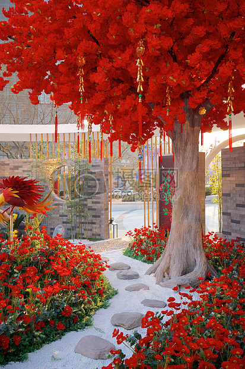

梦
目录
1.雪中列车
2.街市
3.泪
4.陨落的星
1.雪中列车
我睁开疲惫的双眼，只望见白茫茫的一片，大雪纷飞，却丝毫感觉不到寒冷。

我好像正要寻找着谁，是谁呢？她在哪儿？在哪儿...我拖着沉重的身躯，漫无目的前行。
远方似乎传来了电车的轰鸣，越来越近，我只是静静地站在原地。
好累，好累啊，真的走不动了，我这样想着。
电车似乎听见了我的想法，缓缓向我靠近，地上本没有轨道，但随着电车的前行，轨道总是先一步在电车前面凭空产生。
终于，它停在了我的面前，也不知是巧合还是刻意的安排，车门正好正对着我，我没有丝毫迟疑，便踏了进去。
由于实在太累，刚一进车，便迎面倒在了看似坚硬的地板上，但并没有意料之中的疼痛传来，反倒是觉着趴在软软的沙发上，十分温暖。
我确乎是很累了，却无法入眠，虽然闭上了眼，但仍能看见周围的光景，好像是在做梦...可这不本来就是梦吗？这样想着也就不奇怪了。
我翻了个身，依旧躺在地板上，不想起身，随着电车的前行，外面的路灯发出的灯光一个接一个映在我的脸上，但却并不刺眼，想必是很晚了。
过了许久，或许是过来许久吧...
2.街市
我能感觉到电车正在减速，似乎是到达目的地了，只见强烈的光芒随着车门的打开涌入车厢，这一次我终于感觉到并非梦境的真实感。
我试图用手挡住它，但无济于事，不知是光穿透了我都手掌，还是我的眼睛能看穿我的手掌，或许是那光直接照在了我的灵魂上...
过了好一会儿，我才适应过来，这时，我发现四周似乎热闹了起来，有各种各样的声音，像是...街市？

我揉了揉眼睛，模糊的光景逐渐清晰起来，我环顾四周才发现，自己正身处街巷之中，人潮涌动，热闹非凡，是我忘记了自己怎么下的电车吗？还是说我没上过电车呢？谁知道呢？
我眨了眨眼，原本热闹的声音又消失了，白天转为了黑夜，一切回归宁静，没错，是久违的...宁...静感。不知为何，竟是感觉眼眶逐渐湿润，是风吹的吗？可是这风很温暖啊。
突然，我的身体似乎不听使唤的向前奔跑，看着四周的街景快速的后退，我这才发觉自己的脚步竟是如此轻盈，好像卸下了千斤之重，但我并未意识到自己早已热泪盈眶。
奔跑中的人啊
四周除了路灯发出的昏暗的灯光已没有其他光源了，想必居民门都已安然入睡了吧。
3.泪
一个转角之后，我发现不远处的一户人家竟还打着灯光，门前稀稀疏疏坐着几个年轻人，虽不热闹，却也安详。
忽然，一股浓郁的烧烤的香气随着晚风扑面而来，是那么的熟悉，令人怀念...
我跑着跑着便慢了下来，缓缓地走到了这家烧烤店前，感觉是如此惬意...与轻松。
“烧烤店...”我望着这家店的店名久久不语，竟是未发觉早已泪流满面...
4.陨落的星
我翻过了重重山川，跨越过湍急的河流，日复一日，年复一年，我忘记了自己活了多久，我不得记得自己的名字，我的人生似乎毫无意义。我看见过无数生命的诞生，也见证过生命的凋零，但他们不过是我永恒生命中的一点涟漪。
直到那一天，那一天......
一颗流星刺破长夜，我知道他不属于这里，不属于这个世界，就在那一瞬间，这永恒的黑夜顷刻被点亮，不知为何，我竟情不自禁地流下眼泪......
最终他坠落在山海中，万籁俱静，似乎这片天地比以前更加黑暗，我仍在原地就就不能自拔，只感受到泪水从眼眶中止不住地喷涌而出。
不舍？迷惘？恐惧？
不，或许是感动与欣慰......
我要找到它，找到它，在这比黑更黑的黑夜中不停的追寻，追寻那坠落的星星......